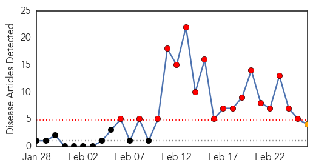
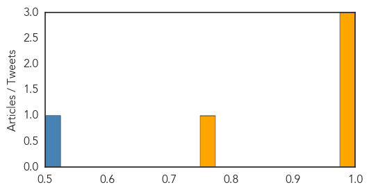
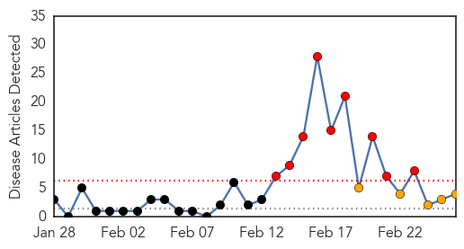
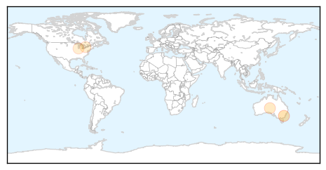
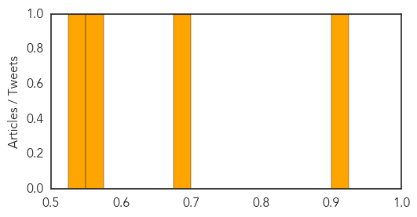

MERS
30-Day Web Trend
18 alerts, 1 warnings

30-Day Twitter Trend
17 alerts, 0 warnings

Article Locations

Article Confidences
Top Articles:
Top Tweets:
- 0.693
- AFD blog `Saudi MOH Announces 3 New MERS Cases & 3 Deaths' MERS-CoV http://t.co/Zdg50VuL7k
- 0.678
- RT: Majority of patients in 2014 Jeddah MERS-CoV outbreak had contact with health care facility, other patients, or both. http://t.co…
- 0.653
- RT: AFD blog `Saudi MOH Announces 3 New MERS Cases & 3 Deaths' MERS-CoV http://t.co/Zdg50VuL7k
- 0.565
- Case study on MERS-CoV reviews preparedness planning for respiratory pandemic in 3 EU countries: http://t.co/98jpvtrT10
Hepatitis
30-Day Web Trend
9 alerts, 5 warnings

30-Day Twitter Trend
0 alerts, 0 warnings

Article Locations
Article Confidences
Top Articles:
Top Tweets:
-
No tweets found for Feb 26, 2015